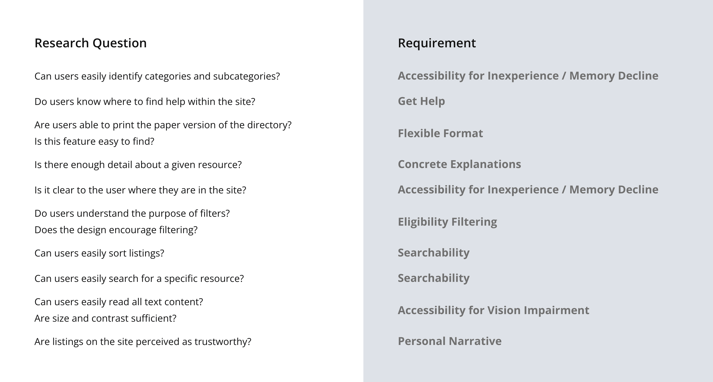
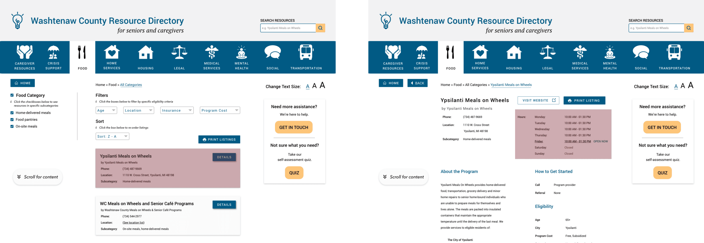

CSSWC Directory
CSSWC provides a resource directory to help older adults and their caregivers in Washtenaw County navigate the aging process gracefully.

CSSWC provides a resource directory to help older adults and their caregivers in Washtenaw County navigate the aging process gracefully.
Catholic Social Services of Washtenaw County (CSSWC) is a non-profit organization that serves Washtenaw County on the basis of the belief that human beings are meant to function as part of a community. Their Blueprint for Aging program supports elderly adults who are aging alone in their homes, either because they have no caregiver, or cannot afford traditional caregiving services (e.g. assisted living, in-home care, etc…).
CSSWC projects that, within the next 10 years, the aging population in Washtenaw County will expand beyond the abilities of the current workforce of dedicated caregivers.
As a result, non-traditional caregivers will increasingly be called upon to support the elderly. Non-traditional caregivers include community members that interact with elderly adults in their professions, such as dentists, hair stylists, or bus drivers. Support resources need to be expanded to help both dedicated and non-traditional caregivers effectively support the elderly adult population of Washtenaw County.
My senior design team partnered with Catholic Social Services of Washtenaw County (CSSWC) to design a web version of their widely-distributed paper senior resource directory in order to expand their outreach and increase access to important resources.
Our goal was to design a system that is searchable, intuitive, and accessible to all community members.
At the beginning of the project’s life, we developed a triad of goals with our CSSWC stakeholders to determine how they would measure the project’s success. The first would measure the success of our piece of the project. The other two would be measured by CSSWC upon development of the directory to assess the effectiveness of their outreach.
Project Manager
UX Research Lead
UX Design Lead
September 2018 - May 2019
In-person
Competitive Analysis
User Interviews
Personas
Initial Ideation
Sketches & Paper Prototypes
Digital Wireframes
Study Design & Methodology
User Testing
Feedback & Testing Results
We met weekly with the CSSWC project lead at their site in Ann Arbor. In these meetings, we updated her with the work we’d done in the past week, identified any upcoming challenges or pivots, and reviewed the roadmap for the upcoming week.
To ensure a robust analysis, we identified three competitor types: direct, indirect, and parallel. In total, we examined 7 competitors.
211 United Way
Area Agency on Aging 1B
UM Turner Senior Resource Center
Aunt Bertha
USDHHS
Yellowpages
Yelp
We did find that direct competitors targeted at older adults made important accessibility considerations. Our indirect competitors gave insight on the architecture of large-scale social services directories. When examining our parallel competitors, we paid attention to the architecture of listings returned by searches, and the filters that accompanied listings.
Some important takeaways:
211 represents the only searchable directory in direct competition; thus, seeing the county-specific content they present will help us to understand the type of content we will be presenting, and the current expectations of Washtenaw County residents.
Aunt Bertha is a national social services directory. Observing how the site organizes and presents social services information will influence the way we present senior services information.
Yelp is successful in the business directory space. Observing how Yelp organizes and enables users to filter through search listings will help us to design an intuitive directory that matches the mental model of a directory that Yelp has created for many users.
View the detailed analysis here.
We initially categorized users into distinct groups: older adults, caregivers, and non-traditional caregivers. Once we began talking to users, we found out that these labels are not discrete or mutually exclusive. Many individuals assume multiple roles, and have different levels of identity associated with each label. In particular, a majority of older adults we interviewed turned out to be caregivers. We also found that the non-traditional caregiver role, which we generally assumed to be young(er) people, could easily be filled by older adults who are active community members, or who hold jobs that interact closely with other older adults.
We also initially began asking participants about their role as “caregiver” or, in the case of older adults, how their “caregiver” was a part of their life. We soon learned that participants we defined as caregivers did not fully realize that they were caregivers, and that older adults often did not recognize the caregivers in their lives as providing “care.”
We took key words and phrases from our user interviews and created an affinity map with seven categories.
Affinity MapOur labels of older adult, caregiver, and non-traditional caregiver are not discrete - more often than not, they overlap.
Trust and personal connection are critical in caregiving relationships, and can supersede internet resources.
Retired adults often volunteer as caregivers to fill their extra time in a productive manner. Some already have experience caring for spouses, parents and friends.
The social stigma of dependence makes caregiving hard to identify.
Caregiver roles are often difficult to define, or even invisible, as they take on many forms.
Younger users are primarily concerned with outreach and education.
From our interview findings, we derived a persona and corresponding empathy map for each user group.
Jane is a synthesis of our older adult and traditional caregiver interviews, and represents our urban population. She reflects our findings that older adults are often caregivers, and that many older adults are experienced with and proactive about using the internet to look for resources.
Sam is a synthesis of our family caregivers and young adults who did not identify as caregivers, or were not identified as caregivers by those they care for. He also represents our urban population. Sam reflects the invisibility of many forms of care, while representing the need that caregivers have for their own wellbeing, and for support resources.
Ashley is a synthesis of our non-traditional caregivers. She also represents our rural population of users, clearly demonstrating the importance of personal connection and trust in rural communities. She represents community members that CSSWC wants to reach to communicate the importance of their help in supporting their aging neighbors.
Since the paper directory was primarily used by older adults, our initial assumption was that they would be our target users.
The results of our user research led to a redefinition of our target audience to include a broad range of users in addition to older adults: caregivers, ranging in age from 20-75, and community members and business owners looking to support older adults/clients. Washtenaw County also has a diversity of geographies: urban areas like Ann Arbor, suburban neighborhoods in Saline, to rural, tight-knit communities like Manchester. These contrasting locations reflected differences in important factors like education, access, age, trust, and community connection.
Another directional shift that we underwent was the signing of a development firm to build the directory. The development contract did not include a database for the directory, which forced us to rethink any account-bound features.
Given the key findings from our user interviews, client requirements, and development constraints, we developed the following design requirements:
Eligibility Filtering
Filtering for service listings based on eligibility criteria such as age, income, cost, and location
Concrete Explanations
Concise, concrete explanations for niche terms and situations
Accessibility for Vision Impairment
Easy to read, scalable content for users with vision impairments
Flexible Format
Directory listings should be easy to print for increased access
Accessibility for Inexperience / Memory Decline
Navigation and options should optimize visibility and map to real-world mental models
Get Help
Help form access should be salient and universal
Personal Narrative
Personal and narrative language that is easy to understand and trust
Searchability
Directory listings should be easily searchable for repeat use
We began by brainstorming ways to recategorize directory. The paper directory, printed on 11x17” (legal) paper, had 31 niche categories of resources. We were able to condense this into 10 categories - as close as we could get to Miller’s Law.
Categorization BrainstomAfter finalizing the categories, we began sketching the directory’s basic architecture. We sketched out skeleton layouts for each page that fulfilled our requirements and ran some basic usability tests.
Based on the results of these rough tests, we solidified a single paper prototype for each page. See below for a brief walkthrough of our paper prototype:
Next, we went to a local senior center to find users for a round of guerilla-style testing with our paper prototypes. Our goal was to find out whether our target users understood the site’s architecture - could they easily navigate from the landing page, through listings, to find detailed information and obtain assistance from a specific resource?
To test this question, we developed a simple scenario:
Imagine you have received a water bill that is higher than usual. You don’t think your water usage was out of the ordinary last month, so you wonder if it is a billing mistake. You need to contact the Ann Arbor Housing Commission (AAHC) via telephone to inquire about your bill. Use the Get Ahead Washtenaw Directory to find the AAHC’s telephone number.
We were able to run this scenario with five participants. The most important feedback from our guerilla testing included:
Listing subcategories alphabetically
Including hours of operation for all seven days of the week on the listing tiles (not just the current day)
Inclusion of a search bar specifically for the Senior Resource Directory (not just the program website)
A table of contents on the directory homepage
Because we had already run a round of user tests on paper, we were able to make some improvements when designing our initial high-fidelity prototype.
We found that our original list-style homepage was difficult for some of our users to parse; so we went with a tiled table-of-contents display to visually separate and simplify the 10 resource categories. We also featured prominent print and download buttons on the top right of the homepage for users who might need access to the paper version. Finally, we incorporated a large “help” ribbon on the right side of the screen with salient calls to action, as per CSSWC’s request. This ribbon is universal to every page on the site.
The listing screen follows when a user selects a category tile from the home screen. We had three significant design challenges for the listing page:
We addressed the first challenge by surfacing categories and filters in a panel to the left instead of hiding them behind a drop-down or button.
Next, we designed listing “cards.” Each listing is presented on a “card” laid out similarly to a business card - a familiar real world object that yields similar information.
Finally, we worked with different layouts for each of these page elements to accommodate 3 text sizes: 20pt, 26pt, and 34pt body text, with headings and labels increasing accordingly.
Pages for individual resources include the same basic information featured on their respective listing cards; however, the page also includes a description of the program, eligibility requirements, and a link to the resource provider’s website (if applicable). Additionally, users can print the individual resource information if they desire.
At this phase of the project, we were reaching the end of the semester and beginning the handoff process. Our team designed a validation study that could be handed off along with our design files so that the contract design team could validate any changes to the design after implementation.
In order to identify design’s success, we developed a series of research questions that mapped to each of our design requirements:
Because our user testing did not have any recruitment backing from our client, and we were already in the handoff stages, we ran another series of guerilla-style user tests to test our digital design changes as well as the validation methodology we had developed. We recruited and conducted our testing at the Ypsilanti Senior Center, the Burns Park Senior Center, a local bookstore and a coffee shop.
Based on the feedback from our user tests, we made several design tweaks to make the directory more intuitive, especially for older users. Some of the fixes were for consistency (e.g. one universal print button instead of one per card).
60% of our users found it difficult to identify categories on the listings page. We modified the architecture of the design so that each of the 10 resource types were classified as categories, and divisions beneath each category were subcategories. With this in mind, we changed the left panel to call out the selected category (e.g. “Food Category). We also added tooltips across the page with instructions on how to manipulate subcategories, filters, and sorting to ensure controls were clear.
We also found that the filters in the left panel were often missed because there was a long list that users had to scroll through, mostly below the page fold. We moved the filters to dropdowns at the top of the page for better visibility. Because this took up more real estate at the top of the page, we also added a bubble with an icon and “scroll for more content” to reinforce the need to scroll to view content appearing below the fold. After one viewport of scrolling, this bubble changes into a “back to top” button with the arrow icon pointing up instead of down.
Finally, we found that the language for hours on listing cards was confusing for 80% of users. We originally designed the cards to say “Open now” and give the current day’s hours if the business or resource is available, or to say “Closed” if they are not. The “Open now” wording was ambiguous to participants, and led some of them to think that the listed hours were identical for each day of the week (which was not always the case). We decided to remove the hours from the listing card altogether and include a comprehensive list of hours on each Resource page.
Our handoff package included the following documents. Some of these materials contain confidential information, but I have linked all that I am able to share.
The Accessibility Package was a personal endeavor of mine throughout the course of the project. In parallel with this project, I was taking a web development course that was heavily focused on incorporating accessibility into web design as standard practice. Because the specification report from the contracting firm returned accessibility marked as a low priority item, I decided to employ a combination of my design skills and accessibility knowledge accumulated throughout the semester to create a document that helped developers understand the benefits of several accessibility features that are easy to implement.
Upon reflection, this project has three big takeaways for me:
This project was an excellent study in development constraints. Because our client was a non-profit, they had a limited budget based on grants and donations to fund the development of this project. As a student doing undergraduate coursework, I had never thought a lot about development constraints, because most often, design work is done as a case study or as coursework, and never sees or is intended for development. And although I’d had practice with time constraints (class deadlines), working with budgetary constraints and client requirements was a new challenge. This project taught me how to identify which development constraints were non-negotiable (e.g. no database/backend) and which I could negotiate and redefine based on UX principles and research (e.g. accessibility features). I also gained experience negotiating a full project handoff - identifying important materials and information necessary to successfully transition a project between teams.
This project was also critical in cementing the importance of empathetic and accessible design into my personal design approach. I was fortunate to take an accessible web development course in parallel with this project, because I learned accessibility best practices and concrete ways to implement them - all in the context of a project that relied heavily on accessible implementation to support the needs of a range of users, but especially older adults who are seeking help with physical and mental health needs. I am now passionate about accessibility, and want to help other designers and developers understand its importance and benefits.
Finally, this project’s scope (caregiving and aging populations) was a great resource for me from a social dynamics perspective. As a caregiver to an older adult in the family at the time of this project, I often felt alone in providing care and support. Often, providing care to an older adult is challenging in and of itself, because loss of independence is often stigmatized, causing embarrassment, denial, and stubbornness. As a caregiver, this project was of personal importance to me, and I was able to bring my own challenges and concerns to the table when researching problems (e.g. resources I wished existed or knew about, places I seek information on aging/caregiving, respite programs, etc…) I’ve learned firsthand that caregiving is often invisible; older adults often don’t or can’t identify their caregivers because of the stigma of aging and its associated emotions. This experience not only caused me to restrategize some of our research methodology, but it helped me to understand the challenges my household faces in our day-to-day interactions are not unique to us, but rather, a reality of life’s aging processes.
{kind=link}
{kind=link}
{kind=link}
{kind=link}
{kind=link}
{kind=link}
{kind=link}
{kind=link}
{kind=link}
{kind=link}
{kind=link}
{kind=link}
{kind=link}
{kind=link}
{kind=link}
{kind=link}
{kind=link}
{kind=link}
{kind=link}